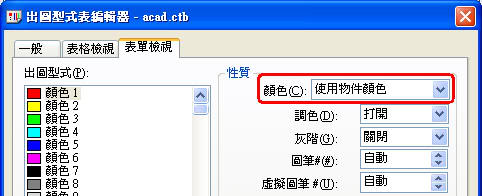
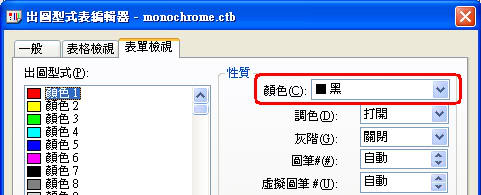
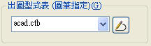
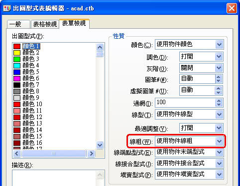
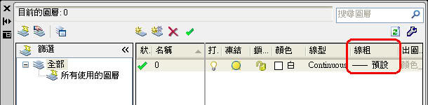
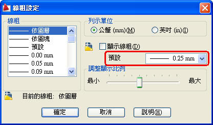
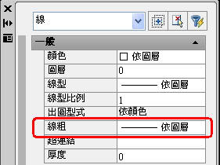
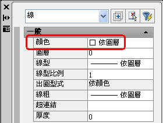

以下說明供大家參考，依照各領域的使用需求巧妙各有不同，以下介紹了 與顏色相關的出圖型式表 (CTB)，歡迎一起加入討論~
一、預設出圖型式：
1.AutoCAD預設的出圖型式為 與顏色相關的出圖型式表 (CTB)，原廠附贈了許多 出圖型式表 (CTB)，一般最典型預設的 (CTB) 為 acad.ctb 全彩出圖，如果想出圖所有顏色為黑色，請選用 monochrome.ctb。
acad.ctb(1~255)使用物件顏色出圖

monochrome.ctb(1~255)使用黑色出圖

2.出圖時選用了 acad.ctb，依照預設在 出圖型式表編輯器 中的線寬(線粗)設定為:使用物件線寬(線粗)，這時候就會根據 圖層性質管理員(LAYER) 中的線寬(線粗)設定，來決定出圖時候的實際筆寬。

出圖型式表編輯器 中的線寬(線粗)設定為:使用物件線寬(線粗)

3.這個 與顏色相關的出圖型式表 (CTB)，其中的出圖筆寬設定可以從 圖層性質管理員(LAYER) 來設定，而圖層的一般線寬(線粗)依照預設為 0.25mm，預設線寬可以從 「線粗設定」LWEIGHT 來設定。

「線粗設定」LWEIGHT

4.當公司企業有出圖筆寬粗細的區分，一般可以透過 圖層性質管理員(LAYER) 來設定線寬(線粗)，進而決定日後的出圖實際筆寬，一般黑白出圖會選用 monochrome.ctb。
補充：上述這個方式當在寄送圖面給其他公司時，並不需要附上 出圖型式表 monochrome.ctb，因為出圖筆寬是會根據圖檔中的 圖層性質管理員 的線寬(線粗)設定，因為圖檔(DWG)會常常寄送給其他公司，所以不建議更改「線粗設定」。
假設你將預設線寬(線粗)設定為其他線粗(如0.09mm)，若別的公司的線寬(線粗)仍為0.25mm，這樣有可能會造成其他公司出圖線寬不對。
所以當你公司企業有出圖筆寬粗細的區分，你就必須在 圖層性質管理員(LAYER) ，一一的設定所有圖檔中會使用的圖層線寬(線粗)，日後在檔案傳輸時只要告訴對方 選用預設的 monochrome.ctb 出圖即可。
注意：圖檔中所有的物件(線、文字、標註等等)，在出圖型式需為 依圖層(Bylayer)。

二、自訂出圖型式：
1.出圖型式表編輯器 中的線寬(線粗)設定為:使用物件線寬(線粗)，但是也可以依照需求，來使用圖層顏色決定出圖時候的實際筆寬，所以你就必須要更改 monochrome.ctb，這邊建議另存一個TEST.ctb再透過 編輯器設定出圖線寬(線粗)，將來你就必須把這個 TEST.ctb 連同圖檔一起給對方，而對方在出圖時即可選用這個 TEST.ctb 來正確出圖筆寬。
2.假設你的 與顏色相關的出圖型式表 (CTB)，顏色1(紅) = 0.15mm 、顏色2(黃) = 0.15mm 、顏色3(綠) = 0.25mm 、顏色4(青) = 0.25mm 、顏色5(藍) = 0.35mm 、顏色6(洋紅) = 0.35mm 、顏色7(白) = 0.45mm 、顏色8~255 = 0.09mm
3.當自訂設定了與顏色相關的出圖型式表 (CTB)，在出圖時是以圖層顏色來決定筆寬，所以在 圖層性質管理員(LAYER) 欲新增圖面中要使用的圖層就有一個規則，如 文字 圖層 可能會設定為 顏色2(黃)、牆壁 圖層 可能會設定為 顏色7(白)、傢俱 圖層 可能會設定為 顏色8。但是你不能將 牆壁 圖層 設定為 顏色8或顏色2(黃)，這樣會造成 牆壁 圖層將來出圖筆寬太細，當然也不能將 文字 圖層 設為 顏色7(白)。
補充：使用自訂出圖型式的公司，通常都會有代表的 與顏色相關的出圖型式表 (CTB)，而該公司的作圖環境需有一本繪圖準則規範，也就是所謂的公司需求，所以同事間必須使用相同的圖層顏色來畫圖，同事間才可以互相支援接手彼此的圖面，若沒有統一規範會造成出圖混亂，也就是同事的圖面不能給我使用，因為圖層顏色不一樣會造成出圖筆寬不一致。
所以當我接到不屬於本公司的圖檔，我會要求對方提供 出圖型式表 (CTB)，若是沒有出圖筆寬要求(只是看而已)，我會選用 monochrome.ctb 或者再自訂一個 其他.ctb 供其他圖面出圖，當然粗細可以自己決定。
注意：圖檔中所有的物件(線、文字、標註等等)，在顏色需為 依圖層(Bylayer)。

AutoCAD線粗不只是螢幕顯示粗細，還可以用在出圖的筆寬粗細，詳情請看影片^_^
如果您覺得有幫助，請幫我訂閱加上分享，有大家的支持是我最大的動力...感恩
PS:這回加字幕花不少時間啊...請多些鼓勵吧~
👇完整出圖教學可以參考以下課程:
延伸閱讀：
最新整理關於基礎相關影片，提供給新手及老手朋友們參考，歡迎多多分享此Youtube播放清單。
※總結：
上述介紹出圖型式方式，這二種方式是比較典型的方式，依公司需求使用習慣皆不相同，可能還有其他的出圖型式問題，是會因你的其他設定而影響(如性質的顏色或線粗)，至於方法的選用你必須對他有一定程度的認識，這樣你才能決定何者方法幫助較大。
[教學]控制物件的出圖型式及線寬(筆寬)-下